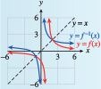

Subsection 2.8 Domain and Range
When we interchange the input and output variables to obtain the inverse function, we interchange the domain and range of the function. For the functions graphed in Example 2.7.19, you can see that
This relationship between the domain and range of a function and its inverse holds in general.
Domain and Range of the Inverse Function.
If \(f^{-1}\) is the inverse function for \(f\)then
Example 2.8.21.
- Graph the function \(y = f (x) = \dfrac{1}{x +3}\) in the window\begin{equation*} \begin{aligned}[t] \text{Xmin} \amp = -6 \amp\amp \text{Xmax} = 3.4\\ \text{Ymin} \amp = -6 \amp\amp \text{Ymax} = 3 \end{aligned} \end{equation*}
- Graph the inverse function in the same window, along with the line \(y = x\text{.}\)
- State the domain and range of \(f\text{,}\) and of \(f^{-1}\text{.}\)
The graph of \(f\) is shown below. It looks like the graph of \(y = \dfrac{1}{x}\text{,}\) shifted \(3\) units to the left.
-
To find the inverse function, we solve for \(x\text{.}\) Take the reciprocal of both sides of the equation.
\begin{equation*} \begin{aligned}[t] \dfrac{1}{y} \amp= x + 3\amp\amp \blert{\text{Subtract 3 from both sides.}}\\ x \amp = \dfrac{1}{y}- 3 \end{aligned} \end{equation*}The inverse function is \(x = f^{-1}(y) = \dfrac{1}{y}- 3\text{,}\) or, using \(x\) for the input variable, \(f^{-1}(x) = \dfrac{1}{x}- 3\text{.}\) The graph of \(f^{-1}\) looks like the graph of \(y = \dfrac{1}{x}\text{,}\) shifted down \(3\) units, as shown below.

-
Because \(f\) is undefined at \(x = -3\text{,}\) the domain of \(f\) is all real numbers except \(-3\text{.}\) The graph has a horizontal asymptote at \(y = 0\text{,}\) so the range is all real numbers except \(0\text{.}\)
The inverse function \(f^{-1}(x) = \dfrac{1}{x}- 3\) is undefined at \(x = 0\text{,}\) so its domain is all real numbers except \(0\text{.}\) The graph of \(f^{-1}\) has a horizontal asymptote at \(y = -3\text{,}\) so its range is all real numbers except \(-3\text{.}\)
Checkpoint 2.8.22.
- Graph the function \(f(x) = \dfrac{2}{x -1}\) and its inverse function, \(f^{-1}\) (which you found in Checkpoint 2.6.18), on the same set of axes, along with the line \(y = x\text{.}\)
- State the domain and range of \(f\text{,}\) and of \(f^{-1}\text{.}\)
- 
Domain of \(f\text{:}\) all real numbers except \(1\text{,}\) Range of \(f\text{:}\) all real numbers except \(0\text{,}\) Domain of \(f^{-1}\text{:}\) all real numbers except \(0\text{,}\) Range of \(f^{-1}\text{:}\) all real numbers except \(1\)